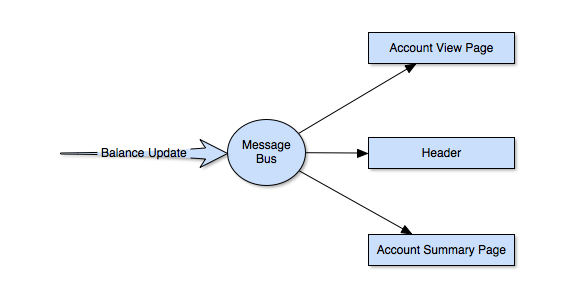
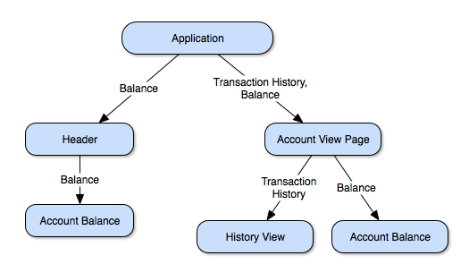

Reactive programming is concerned with handling change - specifically, the propagation of change. As web applications have become more and more asynchronous, keeping track of application state has become increasingly complex. With traditional programming patterns, we rely on event listeners or try to keep track of application state manually.
Consider a banking application where the user’s account balance might appear in several different places on the screen. After the user makes a withdrawal, we want the account balance to update.
Traditionally, we might use an event emitter. Each time the balance is updated we emit an event, and any interested parties can listen for these events.

// assume some sort of application wide messageBus
function makeWithdrawal() {
// make the withdrawal
messageBus.emit('account-balance-updated', newBalance);
}
// at different points in the UI
messageBus.on('account-balance-updated', (newBalance) => {
accountDomElement.innerText = newBalance;
});
With an event emitter, any interested widget can listen for updates to the account balance. This pattern has served well in the past, but there are a few problems with this approach:
account-balance-updated every time the account balance is changed.Dojo 2 is built around unidirectional, top-down property propagation where it is the parent widget’s job to pass properties down to its children. In fact, a child widget has no direct reference to a parent widget! When a property changes, widgets are re-rendered (using an efficient virtual DOM) to reflect the updated state.
In our banking example, we simply provide the account balance as a property to the widget - and when the property changes, so does our user interface. The account balance is propagated down to the widgets that need it.

export interface AccountBalanceProperties {
balance: number;
}
class AccountBalance extends WidgetBase<AccountBalanceProperties> {
protected render() {
const { balance } = this.properties;
return v('span', {}, [ balance ]);
}
}
Our AccountBalance widget is only concerned with its balance property, which is provided by the parent widget. Setting the balance property at the application level will cause the balance to be updated across the entire application.
Reactive programming patterns are being used in Dojo 2 to make widgets consistent and easy to author. In fact, to further embrace reactive patterns - with beta 3, Dojo 2 will have a reactive application store. Want to learn more about reactive programming? There are a number of additional reactive patterns that can be used to manage your application state (like Redux, or Observables).